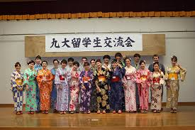
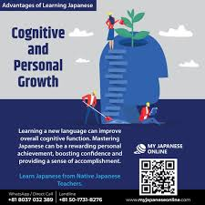
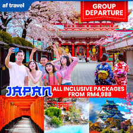

Welcome to Marvelous Japanese Language School

Opportunities of Learning Japanese Language
Learning Japanese opens up many valuable Opportunities, both personally and professionally.
Here are some key benefits and Opportunitiess you can join:
- Cutural Access
- Education Opportunities
- Career Advantages
- Communication and Friendships
- Cognitive and Personal Growth
- Travel and Living in Japan
Book Now
Promotion:30% discount until end of July!
Courses
Cultural
- Understand anime,manga, J-drama, and J-pop in their original form.
- Enjoy authentic experiences with Japanese literature , movies, and traditions.
Education
- Study in Japanese universities with scholarships (e.g MEXT scholarships).
- Join exchange programs or Language school in Japanese .
Career
- Work in Japanese companiese (in Japan or globally)
- Opportunities in fiels like:
- Translation/ Interpretation
- Tourism/ Hospitality
- International Business
- Teaching (like English Teachers in Japan- JET Program)
Communication
- Make Japanese-speaking friends easily.
- Travel confidently in Japan an interact with locals respectfully.
Cognitive

- Learning kanji sharpens memory and focus.
- It boosts discipline, especially when mastering writing and grammar.
Travel

- Easier to travel, shop, use transport , and enjoy local life.
- Helpful for those wanting to live in japan lomng-term(eg. for work or marriage).
Back to Home Page